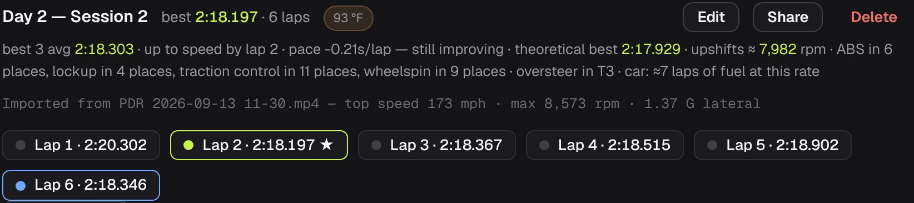
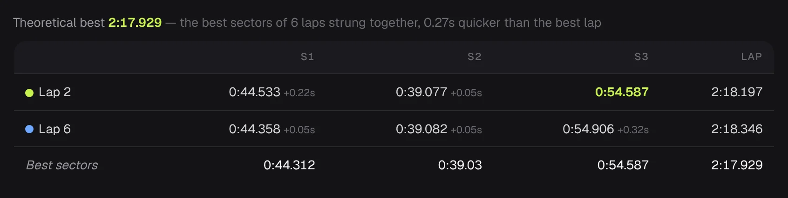

Lap time consistency and your theoretical best
One fast lap shows what you and the car can do. Whether you can do it again shows how well you know the circuit. Consistency is the number that separates the two, and paired with a theoretical best lap it tells you what to work on next: finding more speed, or repeating the speed you already have.
Why consistency comes first
A driver whose laps are all within a few tenths of each other is hitting the same braking points, turn-in points and throttle points every time. That matters for three reasons:
- You can test a change. If your laps vary by two seconds, you cannot tell whether a new line or two more psi in the fronts was worth three tenths.
- You are predictable to the cars around you, which is what organizers and instructors look for before moving a driver up a run group.
- Speed built on repeatable laps stays. A one-off fast lap usually came from one corner going unusually well.
Measuring it
The simple measure is the spread of your lap times: how far a typical lap sits from your average. To compare a 1:30 circuit with a 2:20 one, express that spread as a percentage of the average lap — statisticians call this the coefficient of variation, the standard deviation divided by the mean.
An example: five laps of 1:41.2, 1:40.6, 1:40.9, 1:41.5 and 1:40.8 average 1:41.0 and vary by about a third of a second either way. That is roughly 0.3% — a tidy session. Add one 1:44.0 spent behind a slower car and the same run scores about 1.1%, though the other five laps have not changed.
Lower is more consistent. As a rough guide, a spread under 1% is repeatable driving, and a first-timer learning a circuit will often be several times that. Compare against your own earlier days at the same track rather than against anyone else.
Which laps to count
The 1:44 above is the problem with a naive measure. A track day is full of laps that say nothing about how consistently you drove:
- the out-lap, on cold tires from the pit lane
- the cool-down lap at the end
- laps spent behind a slower car waiting for a point-by
- laps where you lifted for a flag or to let someone past
Count those and the number measures traffic. The usual fix is to keep only the laps close to the best of the session they came from — the idea behind the 107% rule racing series use in qualifying. Judging each session against its own best matters: a damp morning session is then measured against the damp track, not against the dry afternoon.
The theoretical best lap
Split each lap into sectors, take your fastest time through each sector from anywhere in the session, and add them up. That sum is your theoretical best (sometimes called an ideal or optimal lap): the lap you would have set if you had strung your best sectors together.
It is nearly always quicker than your actual best, and the size of the gap is the useful part:
| Gap to theoretical best | What it suggests | What to work on |
|---|---|---|
| Large | The pace is already in you, in pieces. You did every part of the lap well at some point, just not on the same lap. | Repetition. Same reference points, lap after lap, until the good version of each corner is the normal one. |
| Small | You are driving close to what you currently know how to do, every lap. | Something new: a different line, later braking in one corner, earlier throttle, or time with an instructor. |
The sector that is furthest off its own best, lap after lap, is where to look first. A theoretical best is still a sum of things you really did, so treat it as a realistic next target rather than a fantasy lap.
Getting more consistent
- Use fixed reference points. A brake marker board, a patch of tarmac, the end of a curb. "About there" is where the variation comes from.
- Work on one corner per session. Changing several things at once makes every lap different by design.
- Find clear track. Leave a gap leaving the pits, and drop back to make space instead of following closely.
- Watch the trend through a session. Laps that get steadily slower point to tires, brakes or concentration fading, and are a reason to come in.
- Leave a margin. Laps at nine-tenths that repeat teach more than one at the limit followed by three recovering.
Consistency in Track Evolution
Track Evolution works this out from the laps you log. Every event with at least three clean laps gets a consistency figure: the coefficient of variation of its clean laps, where a clean lap is one within 7% of the best lap of its own session. Out-laps, cool-down laps and laps lost in traffic drop out on their own, and every lap still counts toward your lap total and track time. Each session also shows a best-three-lap average, whether your pace was improving or fading through the run, and how many laps you took to get up to speed. All of that is free, and works with lap times typed in by hand.

Sessions with telemetry — an imported video or data file, or laps recorded with your phone — also get sector splits and a theoretical best lap with no setup: each lap is divided into three sectors automatically, the session's best in each is marked, and the theoretical best appears beside your actual best whenever it is quicker. A delta graph then shows where around the lap one lap gained or lost time against another. Sector splits, the theoretical best and the delta graph are part of Track Evolution Pro.
